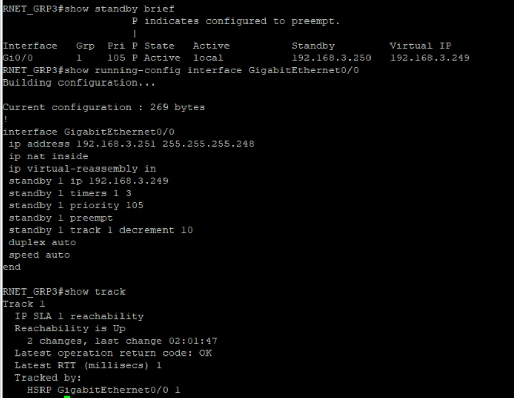
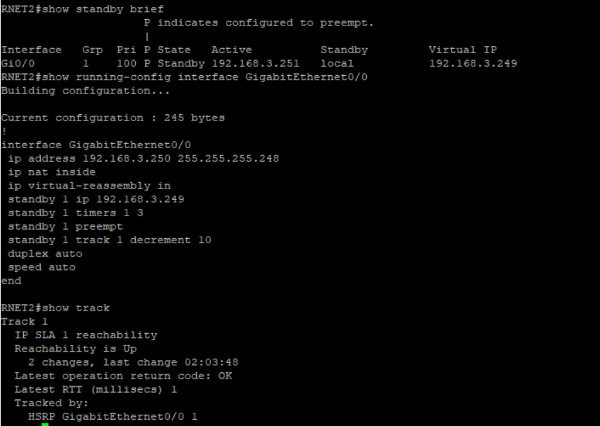
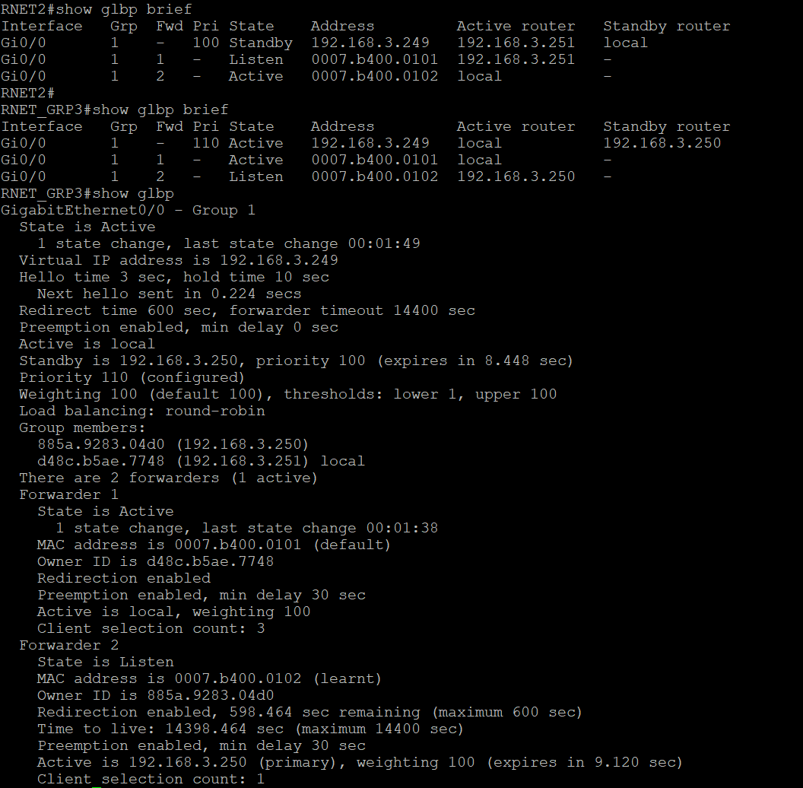
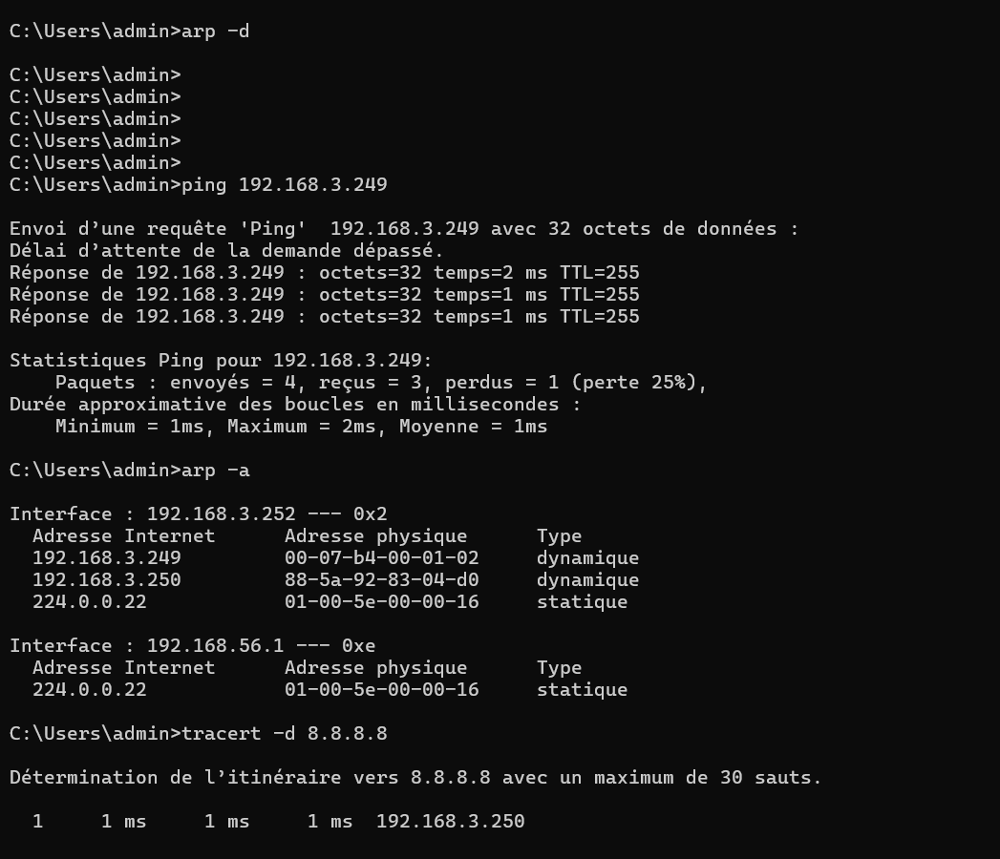
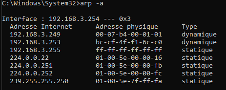
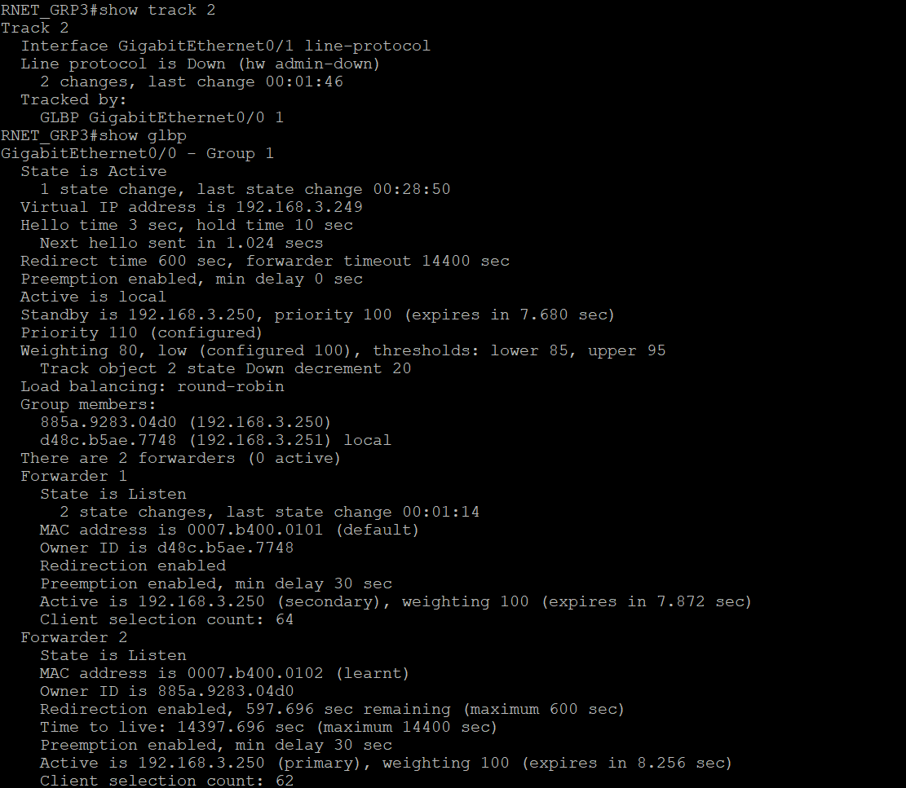
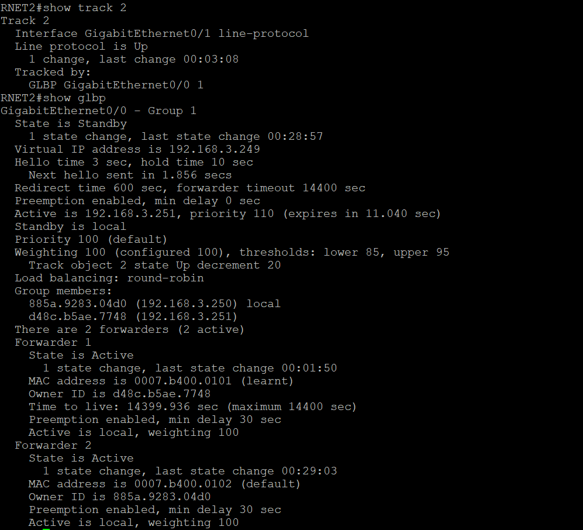
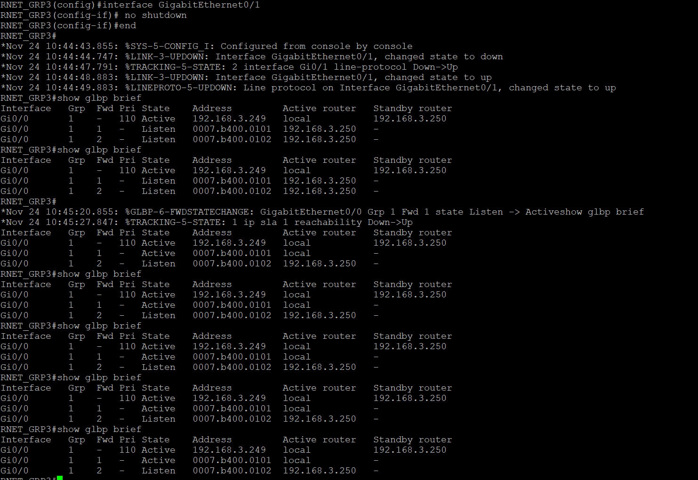
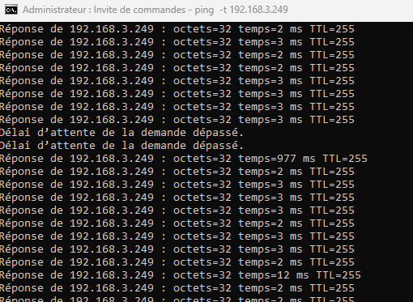
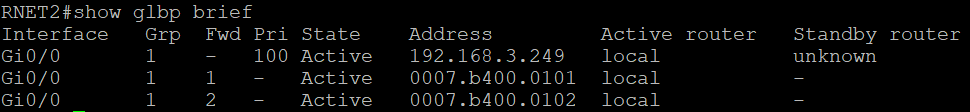

01Contexte et adressage
RNET1 (nommé RNET_GRP3 sur les captures) et RNET2 relient le pare-feu de RIOCA à deux fournisseurs d'accès différents. Avec HSRP, RNET1 transmet tout et RNET2 attend : le deuxième accès ne sert jamais tant que RNET1 fonctionne. GLBP, lui aussi propriétaire Cisco, garde une seule adresse de passerelle mais répartit les clients entre plusieurs routeurs.
Les adresses du sujet ne correspondaient pas à notre maquette. Nous avons gardé l'IP virtuelle de HSRP, 192.168.3.249, pour GLBP : le pare-feu, qui l'utilise comme passerelle, n'avait rien à changer.
| Équipement | Interface | Adresse | Passerelle |
|---|---|---|---|
| RNET1 | Gi0/0 (côté pare-feu) | 192.168.3.251/29 | – |
| RNET1 | Gi0/1 (fournisseur 1) | 192.168.4.31 | 192.168.4.254 |
| RNET2 | Gi0/0 (côté pare-feu) | 192.168.3.250/29 | – |
| RNET2 | Gi0/1 (fournisseur 2) | 172.18.53.2 | 172.18.255.254 |
| GLBP, groupe 1 | IP virtuelle | 192.168.3.249/29 | – |
| Pare-feu Zyxel | côté SwitchNET | 192.168.3.253/29 | 192.168.3.249 |
| PC-T1 | carte réseau | 192.168.3.252/29 | 192.168.3.249 |
| PC-T2 | carte réseau | 192.168.3.254/29 | 192.168.3.249 |
Le réseau en /29 n'a que 6 adresses : pour libérer la 192.168.3.254, l'adresse de gestion de SwitchNET a été retirée pendant le TP. Les deux PC de test sont branchés sur SwitchNET, dans le même VLAN 92 que les routeurs et le pare-feu.
02De HSRP à GLBP
Au départ, RNET1 est actif en HSRP avec la priorité 105, RNET2 en secours avec 100, et l'IP virtuelle est 192.168.3.249. Le suivi de l'accès Internet (track 1, par IP SLA) est en place sur les deux routeurs.




HSRP doit être retiré avant de configurer GLBP sur la même adresse : sinon le routeur répondrait aux requêtes ARP pour 192.168.3.249 avec deux adresses MAC virtuelles différentes, et la passerelle deviendrait instable. Sur RNET1 :
interface GigabitEthernet0/0
no standby 1 track 1 decrement 10
no standby 1 preempt
no standby 1 priority 105
no standby 1 timers 1 3
no standby 1 ip 192.168.3.249Mêmes commandes sur RNET2, sans la ligne priority. L'objet de suivi track 1 est gardé pour remettre HSRP à la fin. Dès ce moment, plus aucun routeur ne répond pour 192.168.3.249 : les PC de test joignent encore 192.168.3.250 et 192.168.3.251, mais plus la passerelle, et le LAN n'a plus Internet jusqu'à la configuration de GLBP.
! RNET1
interface GigabitEthernet0/0
glbp 1 ip 192.168.3.249
glbp 1 priority 110
glbp 1 preempt
glbp 1 load-balancing round-robin
! RNET2 : mêmes lignes, sans la priorité (100 par défaut)Le routeur à la plus haute priorité devient l'AVG (Active Virtual Gateway). Nous avons choisi RNET1, déjà routeur principal avec HSRP.
03Rôles AVG et AVF
GLBP sépare deux rôles. L'AVG répond aux requêtes ARP pour l'IP virtuelle et distribue les adresses MAC virtuelles aux clients. Chaque AVF (Active Virtual Forwarder) porte une de ces MAC et transmet le trafic qui lui est envoyé. Ici, chaque routeur est AVF pour sa MAC, et RNET1 est en plus l'AVG.


| Rôle | Porté par | État sur RNET1 | État sur RNET2 |
|---|---|---|---|
| AVG (IP 192.168.3.249) | RNET1 | Active | Standby |
| Forwarder 1, MAC 0007.b400.0101 | RNET1 | Active | Listen |
| Forwarder 2, MAC 0007.b400.0102 | RNET2 | Listen | Active |
L'état Listen veut dire que le routeur connaît la MAC et se tient prêt à la reprendre si son routeur tombe. Les valeurs par défaut relevées sur RNET1 : un message toutes les 3 secondes (hello), une panne déclarée après 10 secondes sans nouvelles (holdtime), un poids (weighting) de 100.
04Un routeur par client
Sur chaque PC, nous avons vidé le cache ARP, puis lancé un ping vers la passerelle et un tracert. Les deux PC ont la même passerelle, mais pas la même adresse MAC pour elle :




La charge est donc répartie par client : chaque PC envoie tout son trafic au routeur dont il a reçu la MAC. Avec l'algorithme round-robin, l'AVG donne les MAC à tour de rôle, à chaque requête ARP. Après un nouveau arp -d *, PC-T2 est passé de la MAC 0102 à la MAC 0101 : un client peut changer de routeur d'une fois sur l'autre.
Les PC de test ne figurent pas dans les règles de NAT des routeurs : ils n'ont pas Internet. Ce n'est pas gênant ici : seul le premier saut montre quel routeur est utilisé.
05Panne d'un lien Internet
Si le lien de RNET1 vers son fournisseur tombe, RNET1 reste en vie : il continue de porter la MAC 0101 et reçoit le trafic de ses clients, sans pouvoir l'envoyer vers Internet. Pour l'éviter, GLBP baisse le poids du routeur quand un objet suivi tombe, et un routeur dont le poids passe sous le seuil bas perd son rôle de forwarder. L'objet track 1 étant pris par HSRP, nous avons utilisé l'objet 2, sur les deux routeurs :
track 2 interface GigabitEthernet0/1 line-protocol
interface GigabitEthernet0/0
glbp 1 weighting 100 lower 85 upper 95
glbp 1 weighting track 2 decrement 20Test : shutdown sur Gi0/1 de RNET1. Son poids passe à 80 (100 − 20), sous le seuil bas de 85 : RNET2 transmet alors pour les deux MAC.




Les clients n'ont rien à changer : ils gardent la même MAC, seul le routeur qui la porte a changé. RNET1 reste AVG, car le poids ne joue que sur le rôle de forwarder.
Au retour du lien, le poids de RNET1 remonte à 100, au-dessus du seuil haut de 95. Il reprend sa MAC au bout de 33 secondes environ : la préemption des forwarders attend 30 secondes par défaut, pour ne pas reprendre la main sur un lien encore instable.


Up à 10:44:47 ; show glbp brief répété : forwarders 1 et 2 en Listen ; à 10:45:20, message GLBP-6-FWDSTATECHANGE Fwd 1 state Listen -> Active ; le forwarder 1 redevient Active sur local." width="1483" height="1020" loading="lazy">06Panne d'un routeur
Un ping continu est lancé depuis PC-T2, qui passe par RNET1, puis le câble Gi0/0 de RNET1 est débranché. Nous n'avons pas éteint le routeur : au redémarrage, il aurait rechargé sa configuration sauvegardée, avec HSRP.




Seules 2 réponses sont perdues, le temps que RNET2 constate la panne (holdtime de 10 secondes). Sous Windows, chaque ping sans réponse attend environ 4 secondes : les 2 pertes et la réponse suivante, à 977 ms, font bien une dizaine de secondes. RNET2 prend alors tous les rôles, et le PC garde la même MAC. Au retour du câble, RNET1 redevient AVG grâce à sa priorité plus haute (110 contre 100) et à glbp 1 preempt, puis reprend son forwarder après les 30 secondes de préemption.
07Algorithmes de répartition
| Algorithme | Comment l'AVG choisit la MAC | Résultat sur PC-T1 |
|---|---|---|
| round-robin (celui du TP) | À tour de rôle, à chaque requête ARP | La MAC change d'une requête à l'autre (partie 4) |
| weighted, poids 150 sur RNET1 et 50 sur RNET2 | Au hasard, selon le poids : 75 % pour RNET1 (150 / 200), 25 % pour RNET2 | 4 essais sur 4 vers RNET1 : un tirage de probabilité, pas un tour de rôle. Cela arrive environ une fois sur trois (0,754 ≈ 32 %) |
| host-dependent | Selon l'adresse MAC du client : un client tombe toujours sur le même routeur | La MAC 0101 à chaque essai, même après avoir vidé le cache ARP |
Pour le test en weighted, il a fallu baisser les seuils de RNET2 (glbp 1 weighting 50 lower 35 upper 45) : avec le seuil bas de 85 de la partie 5, un poids de 50 lui aurait fait perdre son rôle de forwarder, et RNET1 aurait tout pris.
host-dependent sert quand un client doit garder la même passerelle, par exemple avec du NAT : il garde la même adresse en sortie. Nous sommes ensuite revenus au round-robin, poids 100 et seuils 85 / 95 sur les deux routeurs, vérifiés avec show glbp.
08Difficultés
- Adresses du sujet différentes de la maquette. L'IP virtuelle de HSRP était en .249 et RNET2 en .250 : nous avons gardé la même IP virtuelle pour GLBP et placé les PC de test en .252 et .254.
- Un PC sur le mauvais switch. PC-T2 ne joignait pas la passerelle : il était branché sur un switch du LAN et pas sur SwitchNET.
- Ports libres inutilisables. Les ports libres de SwitchNET étaient coupés et dans le VLAN 1, alors que les routeurs sont dans le VLAN 92 : nous en avons activé deux dans le VLAN 92.
- Adresse déjà prise. La 192.168.3.254 était l'adresse de gestion de SwitchNET : retirée pendant le TP, puis remise.
- Objet de suivi déjà utilisé. track 1 servait à l'IP SLA de HSRP : GLBP a utilisé track 2.
Remise en état : la configuration GLBP n'a jamais été sauvegardée. RNET1, RNET2 et SwitchNET ont été redémarrés avec reload, en refusant la sauvegarde : ils ont rechargé leur configuration de démarrage, avec HSRP et l'adresse de gestion du switch. PC-T2 a été remis en DHCP avec l'authentification 802.1X, sur sa prise d'origine, et les postes du LAN ont retrouvé Internet.
09Bilan : HSRP ou GLBP ?
| Critère | HSRP | GLBP |
|---|---|---|
| Rôles | Active et Standby | Un AVG, jusqu'à 4 AVF |
| MAC virtuelle | 0000.0c07.acXX (XX = groupe, en version 1) | 0007.b400.XXYY (XX = groupe, YY = forwarder) |
| Routeurs qui transmettent | Un seul | Jusqu'à 4 en même temps |
| Préemption par défaut | Désactivée | Désactivée pour l'AVG, activée pour les AVF (après 30 s) |
| Norme | Propriétaire Cisco | Propriétaire Cisco |
GLBP garde la tolérance de panne de HSRP : 2 pings perdus quand un routeur tombe, et le tracking fait passer le trafic par l'autre routeur quand un lien Internet tombe. Mais il répartit par client, au moment de sa requête ARP, et pas par paquet.
Or, sur la maquette, les postes du LAN passent par le pare-feu, et c'est lui le seul client des routeurs. Il reçoit une seule MAC virtuelle : tout le trafic du LAN partirait par un seul routeur et un seul fournisseur. Pour répartir vraiment, il faudrait plusieurs clients devant les routeurs, ou que le pare-feu répartisse lui-même, avec deux routes par défaut par exemple.
GLBP ne fonctionne qu'entre routeurs Cisco. Si RNET2 était remplacé par un routeur d'une autre marque, il faudrait passer à VRRP, un standard de l'IETF. Pour garder une répartition, on créerait deux groupes VRRP avec un routeur maître différent dans chacun, et une passerelle différente pour chaque moitié des clients.
Ce que j'en retiens : répartir la charge, ce n'est pas seulement l'activer sur les routeurs. Il faut savoir qui sont les clients : ici, un seul client derrière les routeurs suffit à rendre la répartition inutile, même si tous les tests sont bons.